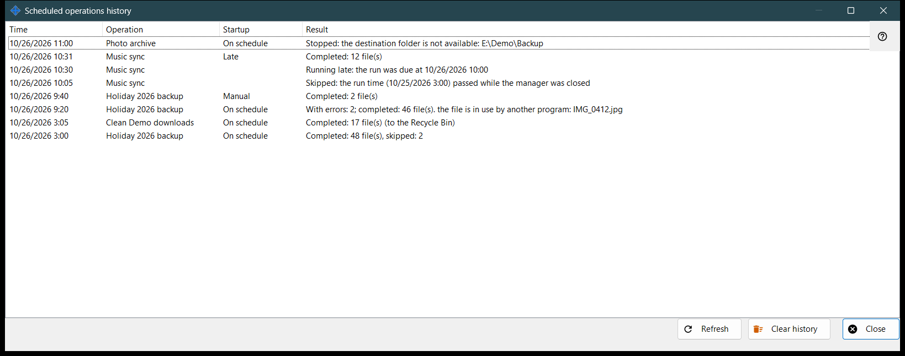
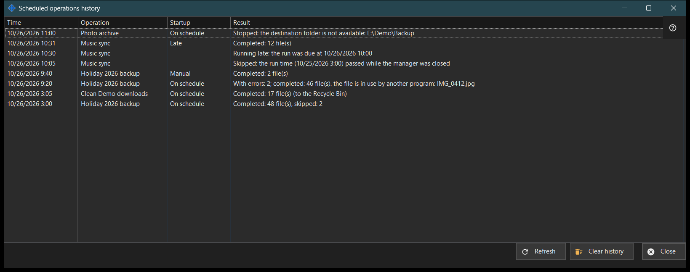

Scheduled operations history
What this is for
Shows the recent runs and notes of scheduled file operations as recorded in the journal. It opens from 'History..' on the 'Scheduled file operations' page of the Share Manager settings.


In this order
- Read the list: Time, Operation, Startup and Result.
- Widen the window if a result is long.
- Press 'Refresh' to read the journal again.
- Press 'Clear history' and confirm to empty it.
- Press 'Close'.
The elements
Columns
Time, Operation (its name), Startup and Result. Startup is On schedule, Manual, Run all or Late, and stays empty for a note. The window reads the latest 200 journal entries when it opens and on 'Refresh'; it does not update by itself.
Results of a run
'Completed: N file(s)', with ', skipped: M' when some were left out and '(to the Recycle Bin)' for deletions. 'With errors: N; completed: M file(s)' followed by the first cause, such as a file in use, no access, a file not found or changed, or a full disk. 'Stopped: ..' when a wall ends a run, for example an unreachable folder, a resource without a stored password or with an unconfirmed server key, or a device that is offline. 'Not started: ..' when the definition is refused, 'Skipped: ..' and 'Interrupted'. The journal keeps codes, not raw error text, so the wording follows the current language.
Notes
A row without Startup is a note: 'Skipped: the run time (..) passed while the manager was closed', 'Running late: the run was due at ..', 'Refused: this operation is already running or waiting in the queue' and 'Resumed: the cause of the stop is gone'.
Clear history
Asks 'Clear the history of scheduled operations? The operations and their schedules do not change.' with No as the default answer. It empties this journal only; the operations and their schedules stay. The button is disabled while the history is empty.
Manager settings · SFTP sharing settings · Exchange server settings